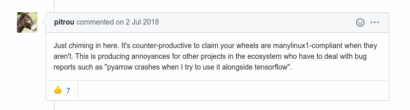

class: center, middle, # .blue[ChiPy Meetup:] ## .blue[Boost.Python Tutorial] ## Derek Steinmoeller ### Founder/Developer @ Waterloo Quantitative Consulting Group. Developer @ Aquanty Inc. ### @dsteinmo (github/twitter) --- #.blue[What is Boost.Python] ## Pros: * Simple declarative/chaining-style interface to bind functions in a Python extension module to C/C++ functions/methods. * Easy to write Python wrappers for pre-existing native C/C++ libraries. * Performance and style gains of native code with user-friendliness of Python API. ## Cons: * Need to carry around binary dependencies, e.,g,. boost-python-37.(so|dll), boost-numpy-37.(so|dll). * Python run-time dependency resolution means it's difficult to use all C++ features, especially templates. * There is a similar lightweight header-only `pybind11`. * Packaging projects that have native dependencies can be challenging. --- # .blue[Getting Boost.Python] # With anaconda/miniconda: <pre> conda install py-boost </pre> # Or, build from source... --- # .blue[Install on Unix-like systems:] Download and Extract from $URI = https://dl.bintray.com/boostorg/release/1.72.0/source/boost_1_72_0.tar.gz <pre> $ curl -fL $URI -o boost_172.tar.gz && tar zxf boost_172.tar.gz </pre> Bootstrap the installer environment: <pre> $ cd boost_1_72_0/ $ ./bootstrap.sh --with-libraries=python,numpy \ --with-python=/opt/_internal/cpython-3.7.3/bin/python3.7 </pre> Add the right pyconfig.h to include path: <pre> $ export CPLUS_INCLUDE_PATH=\ /opt/_internal/cpython-3.7.3/include/python3.7m/ </pre> Build & Install: <pre> $ ./b2 --prefix=/boost_1_72/ --with-python variant=release link=shared\ threading=multi runtime-link=shared toolset=gcc install </pre> --- #.blue[On Windows?] * Run `bootstrap.bat` instead of `boostrap.sh` with same/similar arguments for python path. * Run `.\b2` as before with `toolset=MSVC` (I haven't tried, see boost 'getting started' docs for more). * Caveat emptor: Support for MinGW seems spotty. Stick with MSVC, maybe cygwin? WSL? --- # .blue[Writing your first binding] ## C++: <pre> #include < boost/python.hpp > using namespace boost::python; struct Greeter { Greeter() {} void greetWorld() { std::cout << "Hello, World!\n";} }; BOOST_PYTHON_MODULE(hello) { class_< Greeter >("Greeter", init()) .def("greet_world", &Greeter::greetWorld) } </pre> --- # .blue[Let's try this out...] Compile & link `hello.so`: <pre> $ g++ -O2 -I/boost_1_72_0/ -I/usr/include/python3.7m/ \ helloworld-py.cpp -fPIC -lboost_python37 \ -Wl,-soname,hello -shared -o hello.so </pre> ^------- Warning: `soname` must match the module name from the C++ code!! Test it: <pre> python3.7 >>> import hello >>> greeter = hello.Greeter() >>> greeter.greet_world() Hello, World! </pre> --- #.blue[Exposing Lists with Static Methods] <pre> #ifdef _WIN32 class __declspec(dllexport) lserk4wrapper { #else class lserk4wrapper { #endif public: static boost::python::list rk4a() { boost::python::list a; for (int i = 0; i < 5; ++i) { a.append(LSERK4::rk4a[i]); } return a; } static boost::python::list rk4b() { boost::python::list a; for (int i = 0; i < 5; ++i) { a.append(LSERK4::rk4b[i]); } return a; } }; </pre> --- #.blue[Exposing Lists with Static Methods (Cont'd)] <pre> class_< lserk4wrapper >("LSERK4") .def_readonly("numStages", new int(5), "The number of stages in the LSERK4 time-stepper (5).") .add_static_property("rk4a", &lserk4wrapper::rk4a, "The a_n coefficients in the LSERK4 time-stepper, where n=0,...,4.") .add_static_property("rk4b", &lserk4wrapper::rk4b, "The b_n coefficients in the LSERK4 time-stepper, where n=0,...,4."); </pre> <pre> $ python 3.7 >>> LSERK4.numStages 5 >>> LSERK4.rk4a [0.0, -0.41789047449985195, -1.192151694642677, -1.6977846924715279, -1.5141834442571558] </pre> ##### etc. --- #.blue[Auto PyDocs!] <pre> >>> help(LSERK4) Help on class LSERK4 in module pyblitzdg: class LSERK4(Boost.Python.instance) | Method resolution order: | LSERK4 | Boost.Python.instance | builtins.object | | Static methods defined here: | __init__(...) | __init__( (object)arg1) -> None : | | C++ signature : | void __init__(_object*) | __reduce__ = <unnamed Boost.Python function>(...) | ---------------------------------------------------------------------- | Data descriptors defined here: | numStages | rk4a | rk4b ... </pre> --- # .blue[Easier builds with setuptools!] <pre> import setuptools from distutils.core import Extension setuptools.setup( name='pyblitzdg', version='0.3.1', scripts=[] , author="Waterloo Quantitative Consulting Group", author_email="dsteinmo@gmail.com", description="Discontinuous Galerkin Finite Element Library and Solvers", long_description="long_description", url="https://github.com/WQCG/blitzdg", platforms=['manylinux2010', 'win64', 'macosx'], ext_modules=[Extension('pyblitzdg', ['src/pyblitzdg/pyblitzdg.cpp'], include_dirs=[ "/boost_1_72/include", "include"], library_dirs=[ "/boost_1_72/lib", "/root/project/"], libraries=['boost_python'], define_macros=[("PY_MAJOR_VERSION", "3"), ("PY_MINOR_VERSION", "7")], language = 'c++14', extra_compile_args = ["-std=c++14"], extra_link_args = ["-Wl,-rpath,/usr/local/lib"] )], classifiers=["Programming Language :: Python :: 3", "License :: OSI Approved :: GNU General Public License v3 (GPLv3)", "Operating System :: POSIX :: Linux"], ) </pre> --- # .blue[Run setup.py] <pre> $ python setup.py bdist_wheel sdist </pre> #### Check out `auditwheel` for bundling native dependencies with your project!! #### For publishing on PyPI, C++ packages must be ManyLinux2010 (PEP 571) or ManyLinux1 (PEP 513) compliant! <div class="center">  </div> --- <br/> <br/><br/><br/><br/> # .blue[Thank you!] <br/> ## .red[Any questions?]